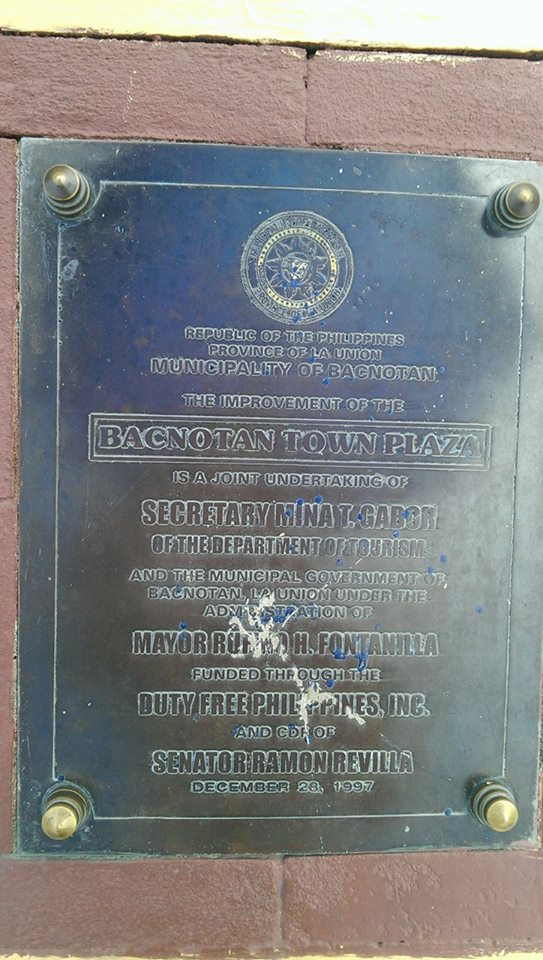
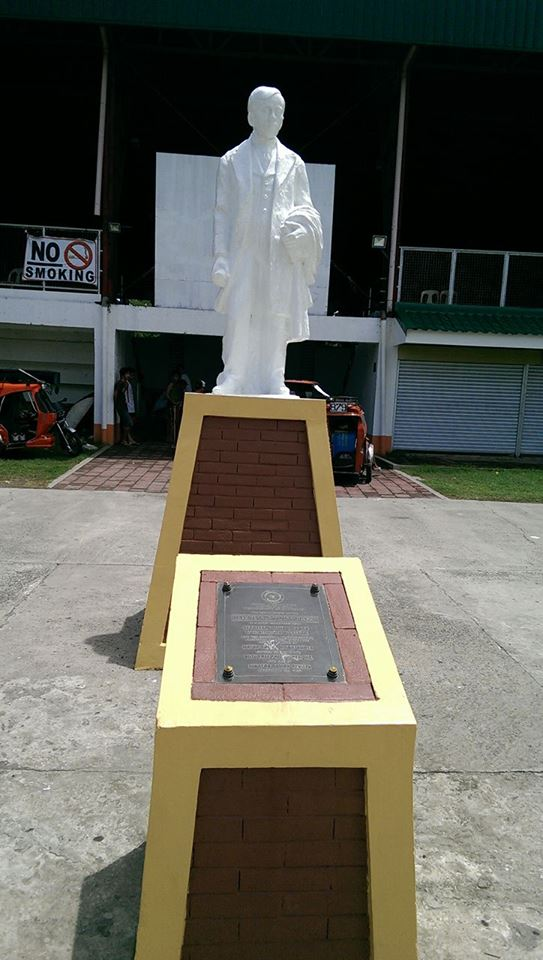
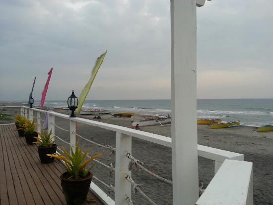
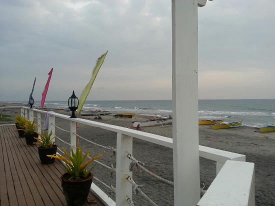
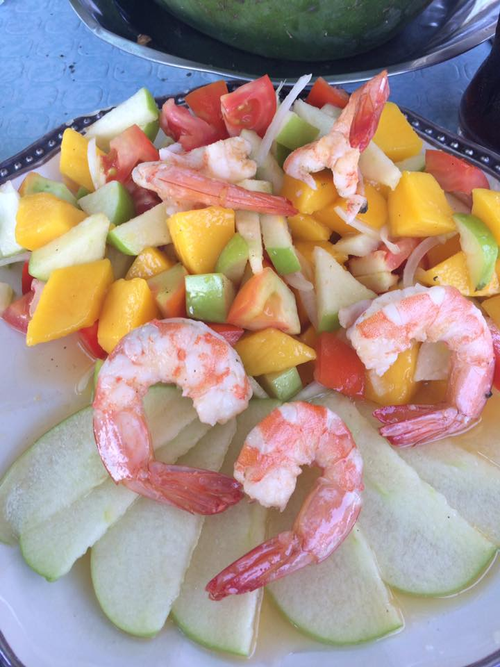
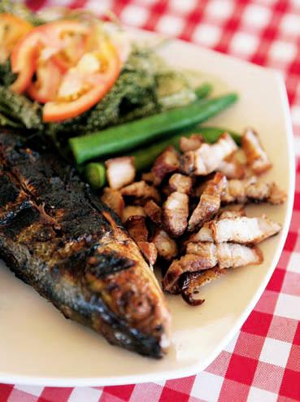
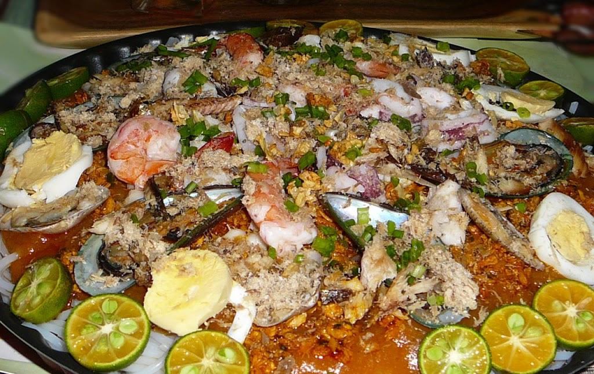
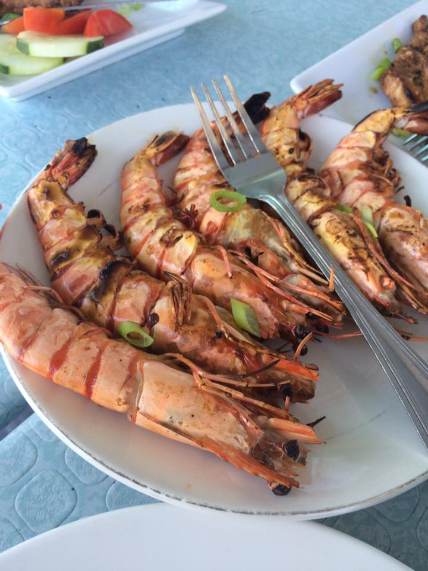
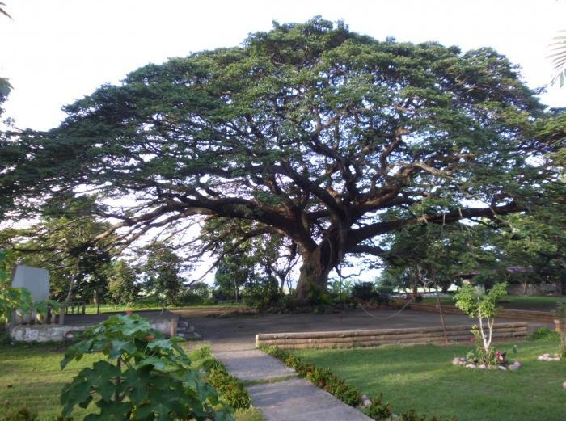
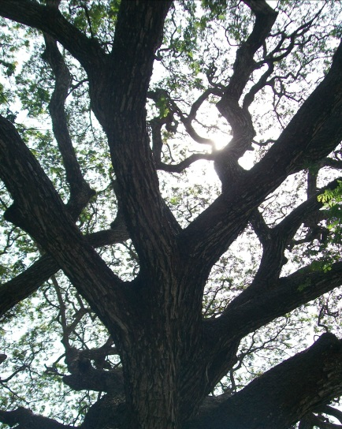

Bacnotan Church, also known as the Saint Michael the Archangel Parish Church, is a Roman Catholic church located in Bacnotan, La Union, Philippines under the jurisdiction of the Roman Catholic Diocese of San Fernando de La Union. It is named after Saint Michael the Archangel.
The plaza was beautiful with lots of human size cartoon characters like Dora and Boots. Our national hero Dr. Jose Rizal also have his monument here at the plaza.
Besides the statue was a stone tablet that tells about the foundation of the plaza. There is also basketball court for recreational activity. People of Bacnotan can never be bored here.


La Playa Ursula is a good resort. Rooms were very clean and relaxing.
The resort even serve free breakfast, and complentary coffee and mineral water in the room. The food was very typical but it tastes so good.
The staffs are responsible and courteous.
For more information and reservation please refer to the following:
Address: Poblacion West, Bacnotan, La Union, Philippines
Phone: +63 905 398 3825
 

The restaurant offers a wide variety of foods that has a price ranging from Php 50-85 for soups ,snacks, and rice delicacies. Different type of juice are available such as
cocktails and iced coffee. They also offer pizza (Php 75-610) and pasta (Php 55-250).
You can never get disappointed because the place is so relaxing to the eyes. When you finished eating, the only words you can say is "its worth it".
For delivery or advanced orders, just contact:
Phone: 0999 794 9580
It is a terrific restaurant situated on the banks of the Baroro River. Great ambiance, great food, friendly service and a cruise boat to see the scenery.
They also having floating cabanas for dining on the river. How great is that? A great place to stop to relax and kick back!
Definitely a unique experience that you can eat at a fish farm, staffs were great. The restaurant also has a reggae night which sounded cool.
Seaweed salad is their especialty.




A hundred + years old acacia tree with about 8 meters circumference found in the school yard of Carcarmay Elementary School.
Its green and cool leaves from its huge and long branches are comfortable and relaxing to the eyes. Like a mother, taking good care of the children.
Like a mother taking good care of its children, the umbrella-like tree seems to engulf the whole school ground and hug grateful seekers of shade and
uncompromised rest.
Location : Carcarmay, Bacnotan, La Union
How to get there:
It is easy to find the place because it has a particular location that is
Carcarmay Elementary School, Carcarmay, Bacnotan, La Union.
And it is accessible to any small land automobiles.

